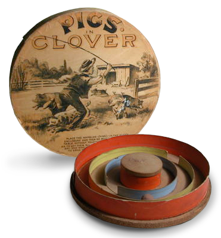

Introduced in 1889, PIGS IN THE CLOVER quickly became the most popular game at the time. It was played everywhere - on trolley cars, pool rooms, by the paper boy on the street corner and even in the halls of congress!
A true cultural phenomenon, political cartoons emerged mocking politicians who played instead of focusing on their duties!
